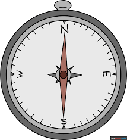

why compass was even made
A compass was first made in ancient China after people discovered that a magnetized needle always points north. It was later used to help sailors navigate.

A compass works by using a magnetized needle that aligns with Earth’s magnetic field, pointing north and helping you find direction.
A compass was first made in ancient China after people discovered that a magnetized needle always points north. It was later used to help sailors navigate.

People use a compass to find direction and not get lost. It helps travelers, hikers, and sailors know where they are going, even when there are no signs or maps.
Scouts use a compass to learn how to navigate in nature. They use it with maps to find directions, follow routes, and reach specific places during hikes and outdoor activities.
Compasses have changed over time from simple magnetized needles used in ancient China to more accurate tools used in navigation today. Modern compasses are smaller, more precise, and often combined with maps or digital devices.
A compass is used in hiking to help you stay on the right path. You line the needle with north and use a map to follow your direction. This helps you reach your destination even in forests or mountains where there are no signs.